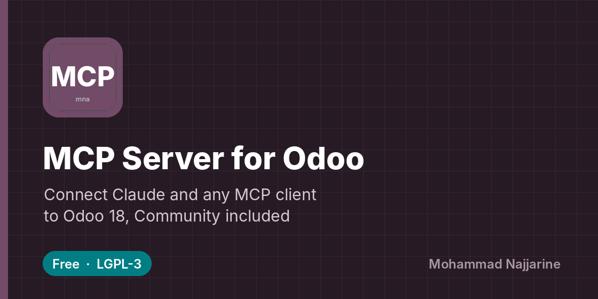
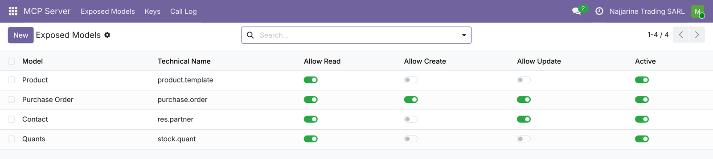
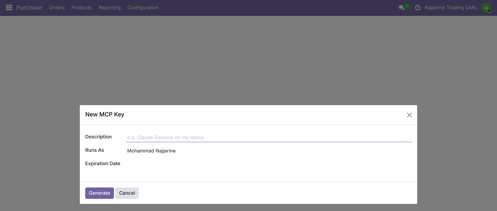
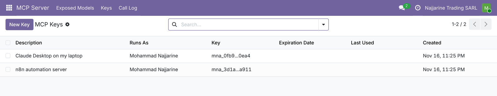
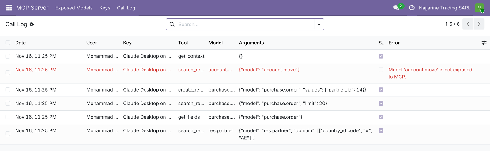

Odoo 20 ships a native MCP server, but only in Enterprise. This module gives Odoo 18 the same thing, Community included: your Odoo answers Model Context Protocol requests at /mcp, with no bridge process and no middleware.
Nothing is reachable until you add the model to the allowlist. Read, create and update are switched on separately per model.
Each key belongs to one Odoo user. Access rights and record rules apply exactly as they do in the interface.
Dedicated MCP keys, stored hashed, shown once, with optional expiry. Delete a key to revoke it instantly.
Every tool call is logged with user, key, model, arguments and outcome.
get_context, list_models, get_fields, search_records, count_records, read_records, create_record, update_record.
Streamable HTTP, JSON-RPC 2.0, MCP revisions 2025-06-18, 2025-03-26 and 2024-11-05.
https://your-odoo/mcp and header Authorization: Bearer YOUR-KEY.No delete tool is provided, on purpose. On a multi-database server, the request must reach the right database (dbfilter or a dedicated hostname).




Built and maintained by Mohammad Najjarine, Odoo consultant. Questions, bugs or a custom need: github.com/najjarinelb